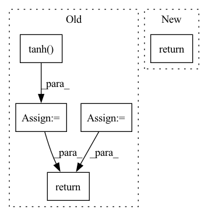

Pattern ID :13803

Before Change
logp_pi -= (2 * (np.log(2) - action - F.softplus(-2 * action))).sum(axis=1)
logp_pi = torch.unsqueeze(logp_pi, dim=1)
action = self.max_action * torch.tanh(action)
mu = torch.tanh(mu) * self.max_action
return action, logp_pi, mu
def get_log_density(self, state, action):
a = F.relu(self.fc1(state))
After Change
a_dist, a_tanh_mode = self._get_outputs(state)
action = a_dist.rsample()
logp_pi = a_dist.log_prob(action).sum(axis=-1)
return action, logp_pi, a_tanh_mode
def get_log_density(self, state, action):
a_dist, _ = self._get_outputs(state)
In pattern: SUPERPATTERN
Frequency: 5
Non-data size: 5
Instances
Fragment ID: 46053886
Project Name: ryanxhr/dwbc
Commit Name: b3791e408af7125fde12cda1cdeaefbaa400aacc
Time: 2022-06-30
Author: xuhaoran8@jd.com
File Name: algos/DWBC.py
M Class Name: Actor
N Class Name: Actor
M Method Name: forward(2)
N Method Name: forward(2)
M Parent Class: nn.Module
N Parent Class: nn.Module
M File Name: algos/DWBC.py
N File Name: algos/DWBC.py
M Start Line: 35
M End Line: 52
N Start Line: 51
N End Line: 54
'>
Before Change
def activate_grad(inp: jnp.ndarray) -> jnp.ndarray:
gate = lax.tanh(softplus(inp))
sigmoid = jax.nn.sigmoid(inp)
return (1 - sigmoid) * gate + sigmoid * (inp + gate - gate ** 2 * inp)
def activate(ctx: Context, inp: jnp.ndarray) -> jnp.ndarray:
After Change
def activate_grad(inp: jnp.ndarray) -> jnp.ndarray:
return jnp.where(inp < 0, 0.01, 1)
def activate(ctx: Context, inp: jnp.ndarray) -> jnp.ndarray:
'>
Fragment ID: 46053806
Project Name: homebrewnlp/homebrewnlp-jax
Commit Name: 3b85d5a95e15aae8898f2ce9fd9be106047444cd
Time: 2022-08-24
Author: 39779310+ClashLuke@users.noreply.github.com
File Name: src/model/activate.py
M Class Name: AnonimousClass
N Class Name: AnonimousClass
M Method Name: activate_grad(1)
N Method Name: activate_grad(1)
M Parent Class:
N Parent Class:
M File Name: src/model/activate.py
N File Name: src/model/activate.py
M Start Line: 16
M End Line: 18
N Start Line: 12
N End Line: 12
'>
Before Change
def forward(self, state, action=None):
a = t.relu(self.fc1(state))
a = t.relu(self.fc2(a))
a_mu = t.tanh(self.mu_head(a)) * self.action_range
a_sigma = softplus(self.sigma_head(a))
a_dist = Normal(a_mu, a_sigma)
a = action if action is not None else a_dist.sample()
a_entropy = a_dist.entropy()
a_log_prob = a_dist.log_prob(a)
return a, a_log_prob, a_entropy
// class Actor(nn.Module):
After Change
probs = t.softmax(self.fc3(a), dim=1)
dist = Categorical(probs=probs)
act = (action if action is not None else dist.sample())
act_entropy = dist.entropy()
act_log_prob = dist.log_prob(act)
return act, act_log_prob, act_entropy
class Critic(nn.Module):
'>
Fragment ID: 46053820
Project Name: iffix/machin
Commit Name: 89695fab2bc63909df0f8994bac2700f121a9b62
Time: 2020-06-16
Author: hanhanmumuqq@163.com
File Name: test/frame/algorithms/test_ppo.py
M Class Name: Actor
N Class Name: Actor
M Method Name: forward(3)
N Method Name: forward(3)
M Parent Class: nn.Module
N Parent Class: nn.Module
M File Name: test/frame/algorithms/test_ppo.py
N File Name: test/frame/algorithms/test_ppo.py
M Start Line: 30
M End Line: 37
N Start Line: 27
N End Line: 33
'>
Before Change
if self.add_nl_layer:
insample_y = self.MLPW(insample_y)
insample_y = torch.tanh(insample_y)
insample_y = self.adapterW(insample_y)
return insample_y
After Change
if self.stat_exog_size > 0:
stat_exog = stat_exog.unsqueeze(1).repeat(1, seq_len, 1) // [B, S] -> [B, seq_len, S]
encoder_input = torch.cat((encoder_input, stat_exog), dim=2)
// DilatedRNN forward
for layer_num in range(len(self.rnn_stack)):
residual = encoder_input
output, _ = self.rnn_stack[layer_num](encoder_input)
if layer_num > 0:
output += residual
encoder_input = output
if self.futr_exog_size > 0:
futr_exog = futr_exog.permute(0,2,3,1)[:,:,1:,:] // [B, F, seq_len, 1+H] -> [B, seq_len, H, F]
encoder_input = torch.cat(( encoder_input, futr_exog.reshape(batch_size, seq_len, -1)), dim=2)
// Context adapter
context = self.context_adapter(encoder_input)
context = context.reshape(batch_size, seq_len, self.h, self.context_size)
// Residual connection with futr_exog
if self.futr_exog_size > 0:
context = torch.cat((context, futr_exog), dim=-1)
// Final forecast
y_hat = self.mlp_decoder(context)
return y_hat
'>
Fragment ID: 46053881
Project Name: nixtla/neuralforecast
Commit Name: 9cdb8c8ddd592a3acd47aa982f42bf995092e049
Time: 2022-11-04
Author: mergenthaler.m@gmail.com
File Name: neuralforecast/models/dilated_rnn.py
M Class Name: DilatedRNN
N Class Name: DilatedRNN
M Method Name: forward(2)
N Method Name: forward(2)
M Parent Class: BaseRecurrent
N Parent Class: BaseRecurrent
M File Name: neuralforecast/models/dilated_rnn.py
N File Name: neuralforecast/models/dilated_rnn.py
M Start Line: 325
M End Line: 359
N Start Line: 367
N End Line: 407
'>
Before Change
def forward(self, x):
x_dilated = self.conv_dilation(causal_pad(x, 2, self.dilation))
x_filter = torch.tanh(self.conv_tanh(x_dilated))
x_gate = torch.sigmoid(self.conv_sig(x_dilated))
x_h = x_gate * x_filter
skip = self.conv_skip(x_h)
return x_h + x_dilated, skip
class WaveNetBackbone(torch.nn.Module):
After Change
def forward(self, x):
x_dilated = self.conv_dilation(causal_pad(x, 2, self.dilation))
return self._forward_dilated(x_dilated)
def forward_fast(self, x):
Fast wave layer forward.
'>
Fragment ID: 46053809
Project Name: cheind/autoregressive
Commit Name: 96254a1bc1b89cc0530cb44cec1cbf8ae15fc010
Time: 2021-10-20
Author: cheind@profactor.at
File Name: autoregressive/wave.py
M Class Name: WaveNetLayer
N Class Name: WaveNetLayer
M Method Name: forward(2)
N Method Name: forward(2)
M Parent Class: torch.nn.Module
N Parent Class: torch.nn.Module
M File Name: autoregressive/wave.py
N File Name: autoregressive/wave.py
M Start Line: 53
M End Line: 58
N Start Line: 54
N End Line: 55